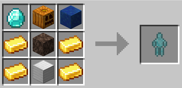
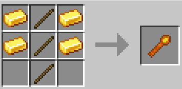
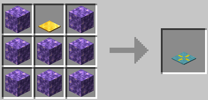

K-Golems adds a golem that can do several kinds of tasks for automation. These tasks are:
Golem crafting recipe:
These golems have 20 health and can't be directly attacked. To set golem's task, right-click on the golem and press desired task button. Then you can set work positions using Position Scepter. Scepter recipe:
You can store a point position on the scepter by right-clicking a block; and you can store two extra positions by Shift+right clicking on blocks. When you hold a scepter, point position will be highlighted with a blue cube in the world, and extra positions will be highlighted by yellow cubes. If you look at a golem that has a task while holding a scepter, his work area and positions will be highlighted in the world. For some tasks you can make golem filter what items/blocks he will operate on by giving him an Item Filter. Item filter is crafted with any kind of coal and paper.
A golem will pick up items in an area specified by extra positions and put it into a block with inventory specified by point position. You can give the golem an item filter which will define what items he will pick up.
For this task a golem needs an axe. He will cut tree logs within extra positions. If there are no logs to cut, he will go to the point position. Golems cut all log blocks in a vertical column, so it is better to grow trees that don't branch out.
A golem needs a hoe for this. He will break crops, melons, pumpkins, nether warts, sugar cane and replant them within extra positions. If there are no plants to harvest, he will go to the point position.
A golem will take items from a block with inventory specified by starting extra position and drop them at ending extra position. You can give him an item filter to specify what items to drop.
A golem will break blocks within extra positions with an item in his hand, and will go to the point position when there are no blocks. You can give the golem a tool, sword or shears for this. You can specify what blocks should he break with an item filter.
A golem will shear shearable entities within extra positions and go to the point position when there are no shearable entities.
A golem will use an item in his hand as if right-clicking with it on a block. If extra positions are set, then he will work within the extra positions, otherwise the golem will use the item on point position; if both point and extra positions are specified, he will take items from the block at point position and use them. You can specify what items to use with an item filter.
A golem will breed animals within extra positions with items in his hand and will go to the point position when there are no breedable animals.
A golem will take items from a block at starting extra position and put them into a block at ending extra position. You can define what items to tranfer with an item filter.
A golem will take blocks from a block at point position and place them within extra positions. You can specify what blocks to place using item filter.
Golems require upkeep in form of water and energy. You can supply them via energy pylons - put water bottles and food into it and it will supply golems within 16 block range.
This mod also adds a block, Regeneration pad, that restores health of entities that walk on it. Regeneration pad must have charge to do that. Charge can be added by healing potions - 4 per potion. Recipe:
